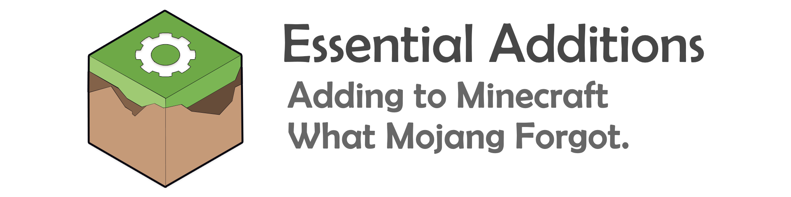

**Note:** This mod is currently being rewritten.
This is a three year old project that we have recently revived, s
**Essential Additions** is a simple Minecraft mod that adds what many people think should be in the Vanilla game. It does not add any new properties or elements to the game, just a few things that were planned by Mojang *(Ruby Gems for example)* or requested by many people, but never added. It adds a few crafting recipes to make Vanilla items, and a few items from Vanilla are used to make their respective armor and tool sets.
We believe that Minecraft is a fun game, but after years of playing, it starts to get boring and monotonous. We aim to fix this, but differently from others.
The mod only adds things that add or expand to the vanilla game, not recreate the vanilla theme.
By only adding things that follow the vanilla theme of the game, we enhance the playing experience and revive the old excitement for adventure that you used to feel. Better than diamond? **A new thing to work for!**